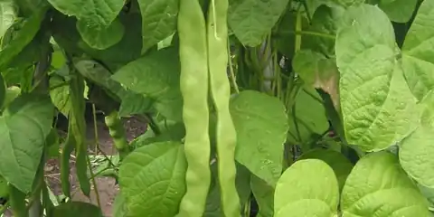

Los frijoles, los chícharos y otras leguminosas solo fijan nitrógeno con las bacterias del suelo adecuadas
Los frijoles, los chícharos y otras leguminosas solo fijan nitrógeno con las bacterias del suelo adecuadas. Una tierra que no ha tenido su tipo recientemente puede tener muy pocas, así que fijan menos.
Tal como está registrada: Una leguminosa fija nitrógeno de la atmósfera solo en simbiosis con rizobios propios de su grupo de inoculación cruzada; un terreno sin historial reciente de ese grupo puede tener muy pocos para formar bien los nódulos.
Prometedor Una persona la comprobó contra sus fuentes. Si no lo sigues, aun así crece, solo que peor. El planificador lo sugiere.
La línea es un solo tramo, por su única fuente. Su fecha es el día en que se consultó y se citó la página.
Cómo leer esto
- Cada tramo de la línea es un grupo, tan largo como su cantidad.
- Un tramo con guiones es una fuente con la fecha en que se consultó y se citó su página, marcada «Consultado». Un tramo continuo lleva la fecha en que una persona la leyó.
- Es una sola línea, enrollada del centro hacia afuera, en el orden de la lista.
Cómo funciona
La fijación de nitrógeno ocurre en nódulos de la raíz formados por bacterias Rhizobium o Bradyrhizobium específicas de cada grupo de leguminosas. En una tierra que no ha tenido antes ese grupo de leguminosas (una cama nueva, una mezcla sin suelo, un largo intervalo en la rotación, un suelo fumigado o muy ácido), la cepa correspondiente puede faltar o ser escasa, así que la nodulación y la fijación se reducen hasta que se forma una población.
Qué hacer
En tierra que tiene leguminosas por primera vez, cubre la semilla al sembrar con el inoculante que corresponde al grupo del cultivo (los chícharos y frijoles de huerto, la soja y el trébol llevan cada uno uno distinto). Una tierra que ha tenido esa leguminosa recientemente por lo general no necesita ninguno. Es un paso barato que se hace una sola vez, recomendado donde falta el historial y nunca obligatorio.
Cuánto importa: No se da ni se estima ninguna cifra de rendimiento. El beneficio es mayor donde faltan esos rizobios (terreno nuevo o que ha descansado mucho tiempo) e insignificante donde el cultivo ya creció antes; como los suelos llevan estas bacterias de forma desigual, la regla solo aconseja.
La evidencia
Evidencia: cotejada con 1 fuente en la literatura basada en investigación.
La fuente
Rhizobia bacteria are fairly specific as to which legumes they will infect, form nodules on the roots of, and for which they will fix nitrogen
Plantas a las que se aplica · 14
 Arveja
Arveja Lupino silvestre
Lupino silvestre- Ayocote
 Trébol blanco
Trébol blanco- Ejote
 Trébol carmesí
Trébol carmesí- Frijol de ojo negro
 Frijol lima
Frijol lima- Ver todas las plantas a las que se aplica
Créditos de las fotos
Arveja. Foto: Rasbak · CC BY-SA 3.0, vía Wikimedia Commons.
Lupino silvestre. Foto: cassi saari · CC BY-SA 4.0, vía Wikimedia Commons.
Ayocote. Foto: Kolforn · CC BY-SA 4.0, vía Wikimedia Commons.
Trébol blanco. Foto: MurielBendel · CC BY-SA 4.0, vía Wikimedia Commons.
Ejote. Foto: Rainer Zenz (uploader), via Wikimedia Commons · CC BY-SA 3.0, vía Wikimedia Commons.
Trébol carmesí. Foto: Nefronus · CC BY-SA 4.0, vía Wikimedia Commons.
Frijol de ojo negro. Foto: Yercaud-elango · CC BY-SA 4.0, vía Wikimedia Commons.
Frijol lima. Foto: Filo gèn' · CC BY-SA 4.0, vía Wikimedia Commons.


,_Trimingham,_Norfolk.JPG){kind=link}


.jpg){kind=link}
Frijoles y arvejas · 9, Cultivos de cobertura y mejoradores del suelo · 5
Frijoles y arvejas · 9
Cultivos de cobertura y mejoradores del suelo · 5
Sigue leyendo
 Cultivos de cobertura y abono verde para el huerto de casa
Cultivos de cobertura y abono verde para el huerto de casa
Cómo cultivar frijol: trepador o de mata, y lo que dejan las raíces- Cómo cultivar habas, una leguminosa de temporada fresca que se cultiva como el chícharo
Créditos de las fotos
Cultivos de cobertura y abono verde para el huerto de casa. Foto: Jonathan Billinger · CC BY-SA 2.0, vía Wikimedia Commons.
Cómo cultivar frijol: trepador o de mata, y lo que dejan las raíces. Foto: Rainer Zenz (uploader), via Wikimedia Commons · CC BY-SA 3.0, vía Wikimedia Commons.
Cómo cultivar habas, una leguminosa de temporada fresca que se cultiva como el chícharo. Foto: Krzysztof Ziarnek, Kenraiz · CC BY-SA 4.0, vía Wikimedia Commons.


Más formas en que Milpa te ayuda
¿Cuándo siembro? · ¿Qué plantas crecen bien juntas? · ¿Qué puedo sembrar ahora? · ¿Algo anda mal en el huerto? · ¿Te dieron un consejo?
Con una cuenta gratis: Planifica tu huerto · Llevar un diario del huerto
Sobre esta página
Cita esta página
Milpa Gardens. “Los frijoles, los chícharos y otras leguminosas solo fijan nitrógeno con las bacterias del suelo adecuadas. Una tierra que no ha tenido su tipo recientemente puede tener muy pocas, así que fijan menos.” Calificación de la evidencia: Prometedor. /es/rules/legume-fixes-atmospheric-nitrogen-only-symbiosis-rhizobia/
Un planificador de huertos basado en evidencia calificada. Cada afirmación indica su calificación de evidencia y enlaza sus fuentes en la página. Cita la página con su calificación y añade la fecha en que la leíste.
Ver esta regla en el planificador · Cómo calificamos la evidencia